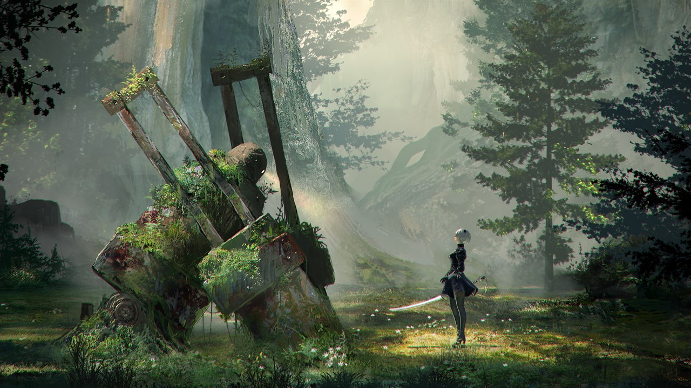

About
Released in 2017, it's set in a post-apocalyptic world where humanity has fled to the moon after an alien invasion by machines. Players control androids 2B, 9S, and A2, who are part of the android resistance fighting against the machines. The game blends fast-paced action combat with RPG elements and an emotionally resonant narrative. It explores themes such as existentialism, consciousness, and the nature of humanity. Throughout the game, players unravel a complex storyline filled with twists, branching paths, and multiple endings, which encourage replayability. The game received widespread critical acclaim for its compelling story, deep themes, engaging gameplay, and haunting soundtrack composed by Keiichi Okabe. It's praised for its unique narrative structure, which intertwines gameplay mechanics with storytelling elements, creating an immersive and thought-provoking experience. NieR:Automata has garnered a dedicated fanbase and is considered one of the standout titles of its generation.
Where to Play
The game can be played on PC, Xbox One, Xbox Series X/S, PS4, and now most recently Nintendo Switch!